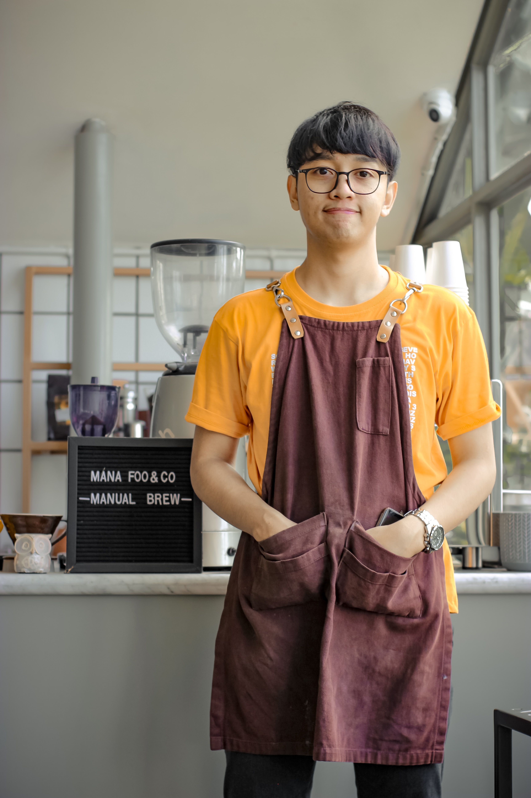

Digital Espresso

I am Mark Capitan, the owner of Digital Espresso. I was always fond of making my own coffee as it is something I drink on a daily basis. I usually offer my friends a cup of freshly brewed coffee when they come to my place and they have always liked it. They then asked me why I haven't sold to people. It may be because I was busy as a student, but this question led me to making my own coffee shop which offers different freshly brewed coffee that can be made on what the customer wants. Ever since, we have continued to grow and now a well known company.